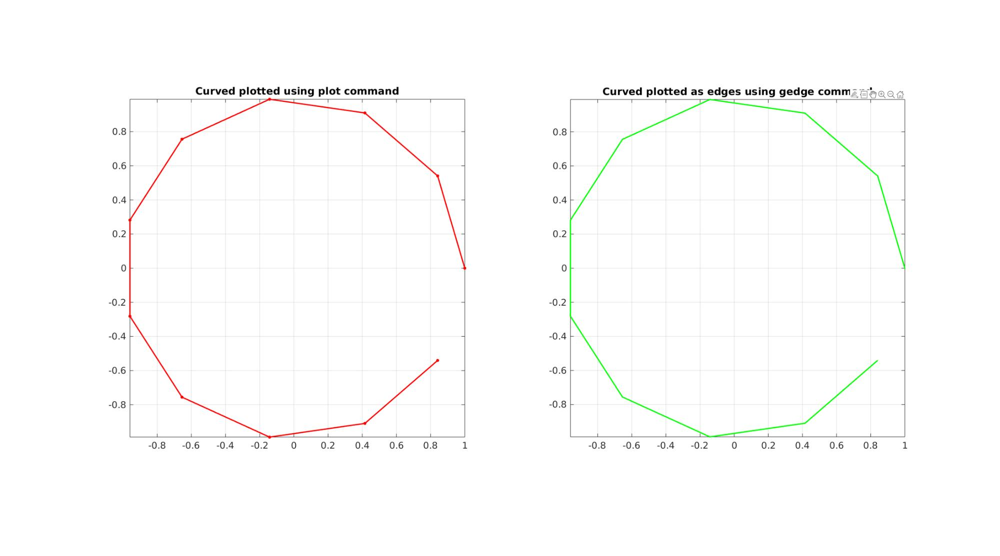

curveToEdgeList
Below is a demonstration of the features of the curveToEdgeList function
Contents
clear; close all; clc;
Syntax
[E]=curveToEdgeList(N);
Description
This function creates an edge array E for the input curve defined by N. The input parameter N can be of the following type: * A single scalar In this case it is assumed N defines the number of points on the curve * An nxm array representing n points and m dimensions, in this case it is assumed N represents the vertex array for the curve * A row or column array, in this case it is assumed that N defines the indices for the points defining the curve.
If closeCurveOpt=1 it is assumed the start and end of the curve should be attached.
Examples
Plot settings
lineWidth=2; markerSize=15; fontSize=15;
Example 1: Creating an edge array for a curve
Create example curve data
t=linspace(0,2*pi,12)'; t=t(1:end-1); V=[cos(t) sin(t) zeros(size(t))]; %Curve vertices n=size(V,1); %Number of points in curve ind=1:1:n; %Curve point indices
Get curve edge array
% Use vertices [E]=curveToEdgeList(V) % Use number of points [E]=curveToEdgeList(n) % Use curve indices [E]=curveToEdgeList(ind)
E =
1 2
2 3
3 4
4 5
5 6
6 7
7 8
8 9
9 10
10 11
E =
1 2
2 3
3 4
4 5
5 6
6 7
7 8
8 9
9 10
10 11
E =
1 2
2 3
3 4
4 5
5 6
6 7
7 8
8 9
9 10
10 11
Visualization
cFigure; subplot(1,2,1); hold on; title('Curved plotted using plot command'); plotV(V,'r.-','LineWidth',lineWidth,'MarkerSize',markerSize); axis tight; axis equal; grid on; box on; view(2); set(gca,'FontSize',fontSize); subplot(1,2,2); hold on; title('Curved plotted as edges using gedge command'); gedge(E,V,'g',2); axis tight; axis equal; grid on; box on; view(2); set(gca,'FontSize',fontSize); drawnow;
Example 2: Using closeCurveOpt
Use closeCurveOpt
closeCurveOpt=1; [E]=curveToEdgeList(ind,closeCurveOpt)
E =
1 2
2 3
3 4
4 5
5 6
6 7
7 8
8 9
9 10
10 11
11 1
Visualization
cFigure; subplot(1,2,1); hold on; title('Curved plotted using plot command'); plotV(V([1:end 1],:),'r.-','LineWidth',lineWidth,'MarkerSize',markerSize); axis tight; axis equal; grid on; box on; view(2); set(gca,'FontSize',fontSize); subplot(1,2,2); hold on; title('Curved plotted as edges using gedge command'); gedge(E,V,'g',2); axis tight; axis equal; grid on; box on; view(2); set(gca,'FontSize',fontSize); drawnow;

GIBBON www.gibboncode.org
Kevin Mattheus Moerman, gibbon.toolbox@gmail.com
GIBBON footer text
License: https://github.com/gibbonCode/GIBBON/blob/master/LICENSE
GIBBON: The Geometry and Image-based Bioengineering add-On. A toolbox for image segmentation, image-based modeling, meshing, and finite element analysis.
Copyright (C) 2006-2023 Kevin Mattheus Moerman and the GIBBON contributors
This program is free software: you can redistribute it and/or modify it under the terms of the GNU General Public License as published by the Free Software Foundation, either version 3 of the License, or (at your option) any later version.
This program is distributed in the hope that it will be useful, but WITHOUT ANY WARRANTY; without even the implied warranty of MERCHANTABILITY or FITNESS FOR A PARTICULAR PURPOSE. See the GNU General Public License for more details.
You should have received a copy of the GNU General Public License along with this program. If not, see http://www.gnu.org/licenses/.